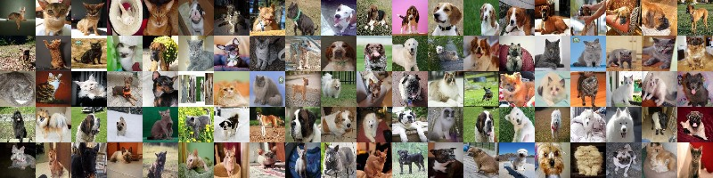
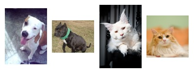
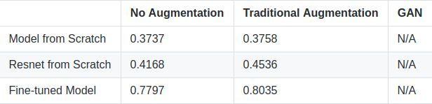

Cats and Dogs Breed Classification
Chongwen Guo, Zhuoran YuSpring 2019 CS 4803 / 7643 Deep Learning: Class Project
Georgia Tech

Figure 1. The Oxford-IIIT Pet Dataset
Figure 1. The Oxford-IIIT Pet Dataset
Introduction / Background / Motivation
Introduction
This project aims to examine whether modern computer vision techniques work well in classification problems where different classes of images have relatively high similarities. The dataset we chose for this project is the Oxford-IIIT Pet Dataset published by VGG group. We are interested in three classification problems: binary classification of cats and dogs, cat breeds classification, and dog breeds classification. The project consists of three major stages: build models from scratch, fine-tune pre-trained models and data augmentation with GAN. The Oxford-IIIT Pet Dataset contains 37 categories of pets with roughly 200 images for each class. The images have a large variations in scale, pose and lighting. Due to high inter class variability, low intra class variability and high pose variability, it is not easy to train and obtain a high accarucy breed-classifier, especially when the data volume is limited. We would like to use GAN to generate several fake cats and dog images. With generated images, we would like to see if they can improve accuracy of classifiers if used as data augmentation and if the classifier can correctly classify them.Motivation
Image Classification is one of the most common task in computer vision which are well-studied over past few years. Model architectures have been improved from basic convolutional neural networks to some more complex models such as ResNet, Inception, etc. However, majority of these models are tested in common classification tasks such as ImageNet, where most classes expose a relatively low similarity to each other. Therefore, we are interested in whether modern computer vision models have enough power to do classification problems like this. Another motivation is the limitation of data. People usually claim that for complex image classfication problems, at least 1000 images per class are necessary. In our dataset, each breed only has approximately 200 samples, which are far more from this widely accepted requirement. We are then interested in how well classifiers can do when images are not sufficient and whether data augmentation techniques could improve the performance of our models.
Figure 2: Dataset Statistics

Figure 3: Example of high intra class variability with two American Pit Bull Terriers and two Maine coons

Figure 4: Example of low inter class variability with Beagle, Saint Bernard and British Shorthair, Russian Blue

Figure 5: Example of high pose variability with four members of Miniature Pinschers
Figure 3: Example of high intra class variability with two American Pit Bull Terriers and two Maine coons
Figure 4: Example of low inter class variability with Beagle, Saint Bernard and British Shorthair, Russian Blue
Figure 5: Example of high pose variability with four members of Miniature Pinschers
Backgrounds and Related Works
For this dataset specifically, fine-grained recognition works has been demonstrated on cats and dogs by O. M. Parkhi, A. Vedaldi, A. Zisserman and C. V. Jawahar, which trained 63.48% and 55.68% accuracy breed classification for cats and dogs respectively, which improved to 66.07% and 59.18% when the ground truth segmentations are used. We are using these models as our baselines. We are looking forward to check if we can build a model from scratch with potential data augmentation techniques to beat them.Approach
The project has two main stages: building models and implementing data augmentation. First, the first model we want to try is to fine-tuning some famous pre-trained models. We want to see if this approach can give any promising results in our task. If so, this fine-tining model is used as our new baseline. Second, we are building models from scratch to see if we can beat baselines(either fine-tuning models or models mentioned in background section). Even though there are various large famous architectures in community such as ResNet and GoogleNet, they are too big to be fit in our small GPUs. We are trying to build our customized models with some ideas borrowed from those famous architectures but not using their exact models. Once we have such a model, we will include data augmentation in our training process. We'll start with some standard operations and see if performance can be improved. Then, we will implement data augmentation by GAN, which is more complex than simpple image operations.Baseline Models
We have chosen two baseline models for experiments and both are variations of Resnets because Resnets is one of the state-of-the-art model. The first one is a fine-tuning model of Resnet-50. We loaded pretrained weights of Resnet-50 from PyTorch and Fine-tuned it on our datasets. The second one is Resnet-18 without pretrained weights. We are trying to see if our model can show some competitive behavior with it.Model Built From Scratch
We built a model from scratch to do the classification task. There are already many state-of-the-art models. However, most of them have such large sizes that cannot fit in our machine such as GoogleNet. Therefore, we are aiming to build a smaller model that combines stengths of those state-of-the-art models. InceptionR and InceptionD are both customized inception blocks.Customized Inceptions
Since we have limited computing power, the idea of inceptionR is to include as many different filters as possible without changing the output size. Similarly, inceptionD would also include more filters than original inception blocks and the size of output is halved. InceptionR is shown belowFigure 6: Model Structures
Experimentals and Results
Our experimental plan follows our plan of attack. There are three main tasks we need to experiment: dog-cat binary classification, cat breeds classificaion and dog breeds classification. For each of them, our experiments are organized as follows: Two main models are used: the model we build from scratch and fine-tuning models. For fine-tuning models, we pick ResNet-50 because of it's promising performance on other tasks and the size of its model. For each model, we also experiment it with different data augmentaiton techniques, namely, no augmentation included, one or two standard data augmentation approach, and one data augmentation technique by GAN. We are curious to see whether we can build a model to beat baselines and how much the model performance can be improved by data augmentation.Data Augmentation by GAN
Generative Adversarial Network is one of the most interesting work in deep learning recently. It has various applications in different areas of deep learning, data augmentation is one of them. Steps:1. Generate fake images
2. Solving label issues: human labor, average weights, new label, etc
GAN Failure Cases
In general, even to generate greyscaled images, GAN would require a large dimension in hidden layers, which exceeds our memory limits. Our images are RGB images with size around 200 x 200, which requires more computation resources. We built a GAN with significantly smaller size and present failure case here.Losses indicate that generator almost gives up on “fooling” discriminator and the discriminator fails to give convincing predictions. This is because of the small size of generator and discriminator: generator cannot generate “interesting” outputs and the prediction power of discriminator is also limited.
Model Accuracies
For cat-dog binary classifier, we are able to built model from scratch with 86% overall accuracy.
The graph shown below summarizes the accuracies for resnet 50 dog-breed classifier.
The table below summarizes the accuracies for cat-breed classifier models we currently achieved.

By using the grab-cut segmentation technique, which uses a SVM classifier to assign superpixels a confidence score and then to label of foreground or background region, masked images that only contains animal body are created. This improves the accuracy for the model from scratch from 37% to 55%.
Analysis and Conclusion
Both our model and Resnet 18 trained from scratch cannot beat resnet-50 fine-tuned model. We only have 200 images for each class, which is far from the number of image required for normal classification tasks where DL models succeed(usually ~1000 per class) Fine-tuning models provide a way better initial weights for classification problems when dataset is not huge. 1. When dataset size is not huge, deep learning models do not have significant advantages over SVM.2. When dataset size is not huge, training from scratch does not give better performance than fine-tuning.
3. Using GAN for complicated images require intensive computational resources.
Team Member Identification
| Name | Description of Work |
|---|---|
| Chongwen Guo | Data preprocessing and model utils functions, tuned hyper-parameters for Pretrained ResNet-50
convolutional neural network
|
| Zhuoran Yu | build models from scratch, perform traditional data augmentation and data augmentation with GAN |